01三季度 DRAM 营收增 369%，出货量仅增 4%
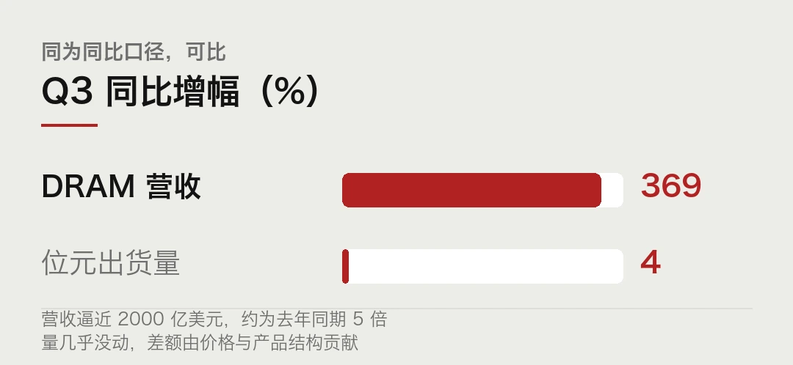
三季度全球 DRAM 营收逼近 2000 亿美元，比去年同期多 369%。
同一季度，位元出货量只多了约 4%。
两个数字摆一起，中间那道口子就是价格。存储这轮的涨法，和过去几十年都不一样。
营收约为去年同期的 5 倍，出货量只增 4%。这是 Counterpoint Research 在 11 月 5 日发布的 Q3 全球存储追踪报告口径。
- Q3 DRAM 营收同比增 369%，逼近 2000 亿美元；位元出货仅增约 4%
- 平均售价升至每 Gb 1.9 美元，DDR 与 LPDDR 营收分别增 500% 与近 400%
- 云端 GPU 与 CPU 配比从 4 比 1 收窄到 2 比 1，传统 DRAM 被 agent 需求拉起来
- 主要新增晶圆厂 2028 年前不投产，长协锁产能成了主流采购方式
先把三组数摆齐
| 指标 | Q3 2026 | 说明 || --- | --- | --- || 全球 DRAM 营收 | 近 2000 亿美元 | 同比增 369% || 位元出货量 | 约增 4% | 与营收几乎脱钩 || 平均售价 ASP | 每 Gb 1.9 美元 | 涨幅较上半年放缓 || DDR 营收 | 同比增 500% | LPDDR 增近 400% |
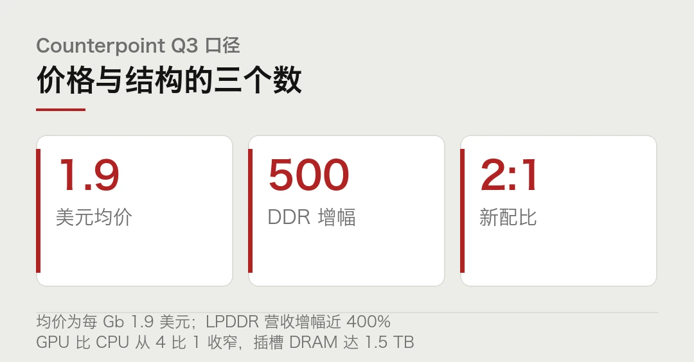
据 Counterpoint 官网，HBM 营收接近增长一倍，但它在 DRAM 总营收里的占比反而降了。原因不是 HBM 卖得差，是传统 DRAM 涨得更快。
这个细节容易被漏掉。大家习惯把 AI 存储等同于 HBM。可这一季把营收顶上去的，是 DDR 和 LPDDR 这些看着不起眼的普通内存。
钱不是从量里来的
过去几十年，存储周期的剧本都是量价齐升。下游要得多，出货涨，价格跟着走，营收自然上去。
这一轮反过来了。量几乎没动，价格自己往上走。
Counterpoint 高级分析师 Jeongku Choi 给了个很准的说法，这是价格驱动的超级周期，不是出货量驱动的周期。他还有一句更直接，如今买方竞争的是供应保障，而不是在价格上反复博弈。
买方心态一变，采购方式跟着变。长期协议 LTA 成了头部云厂商和 AI 企业的主流选择，提前锁定未来产能，不再随行就市比价。
北京社会科学院副研究员王鹏在证券时报的访谈里拆了这层变化。长协大规模铺开后，定价权会从分散的现货博弈挪走。它转向头部厂商与超大客户的双边深度绑定，形成长协锁核心产能、现货补弹性需求的双层格局。
麻烦在于，双层格局不等于周期消失。王鹏的判断是，消费电子库存波动主导的短周期剧烈震荡会被平滑。景气上行的持续时间被拉长，但供需错配的底层逻辑还在。等集中到期的长协撞上新产能释放，结构性调整照样会来。
把「周期被熨平」读成「周期没了」，是最容易犯的错。
为什么是 DDR 跑赢 HBM
这一节得停一下，因为它牵出一个更大的变化。
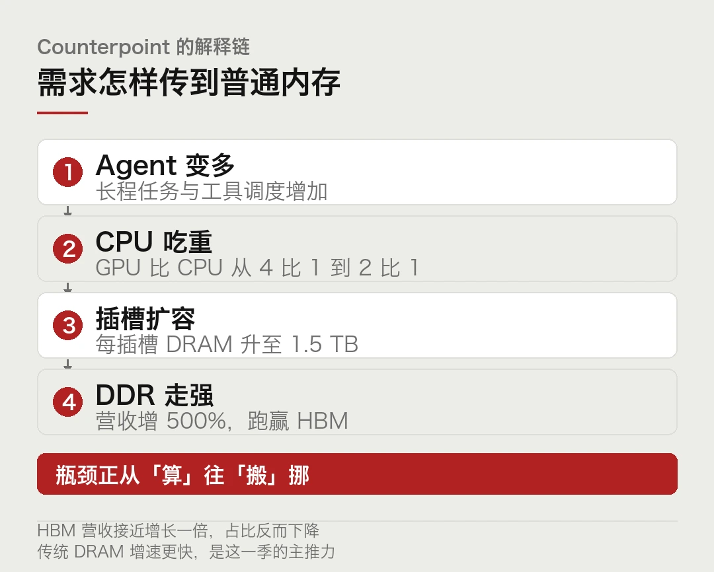
Counterpoint 副总监 Brady Wang 的解释是，agentic AI 正在把传统 DRAM 的需求拉起来。按他们的云端 AI 算力追踪数据，GPU 与 CPU 的配置比例已经从 4 比 1 收窄到 2 比 1，还在往 1 比 1 靠。
这个比例变化很实在。以前的 AI 机柜是 GPU 唱主角，CPU 只是配角。现在 agent 要跑长程任务、要调度工具、要处理大量并发会话，CPU 的活变多了，服务器内存自然跟着涨。
英伟达 Vera Rubin 机架是个具体例子。每个 CPU 插槽对应的 DRAM 容量比上一代增加近两倍，到 1.5 TB。
AI 把存储从大宗商品变成稀缺资源，先体现的不是 HBM，是服务器上那些普通内存条。
我关注这个判断还有一层原因。它说明算力瓶颈正在从「算」往「搬」挪，这跟存算一体、近存计算这些方向的兴起是同一件事的两面。
座次也在换
价格普涨没盖住厂商之间的分化。
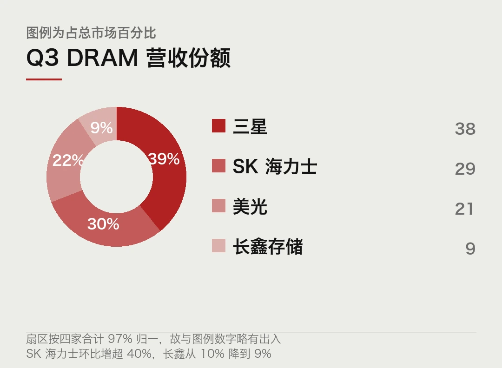
三星以 38% 的营收份额继续居首。SK 海力士三季度营收环比增超 40%，份额从二季度的 25% 回到 29%。美光 21% 排第三。长鑫存储从二季度的 10% 降到 9%。
Counterpoint 研究总监 MS Hwang 的说法是，每一代 HBM 都在重置座次。SK 海力士此前在 HBM3E 占优，增长势头放缓；三星的 HBM4 拿到了客户积极反馈，预计明年有望在 HBM 市场居首。
据三星全球新闻室的官方口径，HBM4 已量产并向客户出货，采用第六代 10 纳米级 1c DRAM 与 4nm 逻辑基底，标称 11.7 Gbps，单堆栈带宽最高 3.3 TB/s。这些是厂商自报参数，不是第三方实测。
注意一点，厂商份额、增速与排名都出自 Counterpoint 的统计口径，不同机构的划分方式会有出入。一份份额表只说明这一家机构的切法，不是精确账本。
该盯的是产能节点
MS Hwang 判断，主要新增晶圆厂在 2028 年前不会投产，供应偏紧的格局会长期维持。长协对价格形成支撑，HBM 价格也在追赶今年落后于普通 DRAM 的涨幅。
听着像是好日子还长，可代价已经开始往下传。Brady Wang 明确提到，服务器 CPU 消耗带动传统 DRAM，会把每 Gb 均价继续推高，同时给边缘市场带来逆风。手机、PC、IoT 这些对成本敏感的场景，得在同一批产能里抢货。
王鹏给国产存储的建议也值得看一眼。他认为突破方向不宜只追平成熟制程的代差。更现实的路是依托国内 AI 落地场景，在 AI 原生存储架构、车规级与工业级高可靠存储这些差异化赛道建生态。
至于拐点，他的说法比「何时崩盘」克制得多。这一轮更可能是涨幅逐步收窄、结构性分化加剧的渐进式演变，不是供需瞬间反转。
那到底盯什么？我一般会看三件事。长协重新谈判的时间窗，新增产能的实际投产节奏，以及 DDR 与 LPDDR 的均价什么时候开始掉头。价格是说出来的，产能是建出来的，后者才有日历。
---
营收涨 369% 而出货只增 4%，这季的钱是价格给的。要判断这轮周期走到哪一段，看成交换订单比看营收曲线靠谱。
本文信息来源
- Counterpoint Research — Q3 2026 DRAM Super-Cycle Nears $200B: Samsung Holds No. 1 with 38%, SK hynix Gains（2026-11-05，官网） · counterpointresearch.com
- Counterpoint Research — Global DRAM and HBM Market Share: Quarterly（2026-09-02，官网） · counterpointresearch.com
- 证券时报网 — 机构：三季度全球DRAM市场营收逼近2000亿美元（2026-11-06） · stcn.com
- 腾讯新闻·凤凰网科技 — 全球DRAM市场营收同比暴增369%：三星份额第一，SK海力士加速追赶（2026-11-06） · news.qq.com
- 腾讯新闻·智通财经 — Counterpoint：AI需求持续增长，三季度DRAM市场营收同比增长369%（2026-11-06） · news.qq.com
- Samsung Global Newsroom — HBM4 mass production and commercial shipments（2026-02-13，官方发布） · news.samsung.com
- 中财网 — AI算力驱动存储爆发，SK海力士三星业绩创纪录（2026-11-03） · cfi.cn
- 每日经济新闻 — 全球科技早参：美股遭遇大幅抛售，OpenAI发布GPT-6 Cyber（2026-11-06） · new.qq.com
- 网易·前沿在线 — 进博会成创新展示窗口，开源模型与产业并购双线提速（2026-11-06） · 163.com
02NVIDIA 开源 auto-ontology，为 agent 补上指标定义
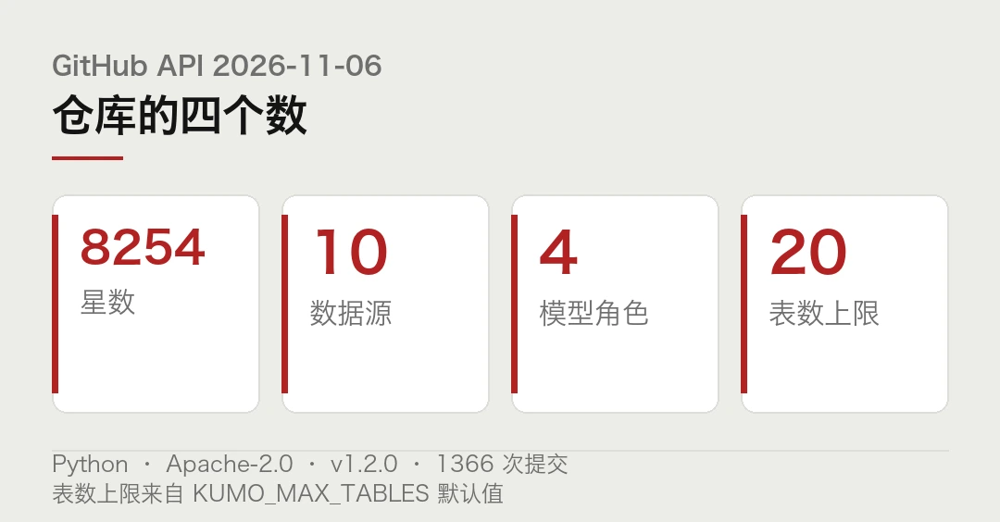
问 agent 上季度华东区营收，它两秒回了一个数。
你怎么知道这个数是对的？口径是含税还是不含税，退货算不算进去，用的是哪套汇率。模型答得再快，只要定义错了，这个数就是废的。
`NVIDIA/auto-ontology` 想补的就是这一层。按仓库 README 的开场白，一个营收指标答得更快、数字却是错的，毫无价值。它给 agent 加一层语义上下文，先说清数据在哪、什么意思、能不能用、从哪来。
上面四个数来自 GitHub API 在 11 月 6 日的返回与 README 正文。主语言 Python，Apache-2.0，最近一次 push 就在 11 月 6 日。仓库已有 1366 次提交，版本 v1.2.0。
装起来要准备什么
先把门槛摆前面。这不是一个 `pip install` 就能跑的小工具。
```bash
# README 的 Quickstart 示意写法，不是我编的 APIgit clone https://github.com/NVIDIA/auto-ontology.git && cd auto-ontologycp .env.example .envdocker compose up -d --build```
按 README，你得有 Docker Compose v2、uv，以及一个来自 build.nvidia.com 的 `nvapi-` 开头的 NVIDIA API key。示例数据库用的是微软 Wide World Importers，需要先 clone 配套的 `auto-ontology-eval` 仓库跑 seed 脚本。
栈也不轻。前端 Next.js 16 与 React 19 在 3000 端口，后端 FastAPI 与 LangChain 在 3001，摄入 worker 在 3002，底下还有 Postgres 加 pgvector、可选的 HashiCorp Vault。官方同时给 Helm chart 走 Kubernetes。
这里有个反差得先说清。它叫「开源库」，听着像装个依赖就行，实际要起一整套服务。跟「一个 skill 装完就用」完全两回事。
我还没在真实仓库里跑过，延迟与准确率都答不上来。下面写的是架构和我读出来的坑，等跑通了再补实测。
它到底解决什么
| 动作 | README 的说法 | 落到实际 || --- | --- | --- || Discover | 从企业元数据生成本体 | 接已有语义模型，建知识图谱 || Ground | 给指标与实体可信业务含义 | 跨系统对齐不一致的定义 || Validate | 按认证定义与血缘校验查询 | 每个回答带上出处 || Expose | 通过 MCP、CLI、API 提供上下文 | 任意 agent harness 可接 || Learn | 把认证过的修正折回本体 | 共享上下文随提问改进 |
它卖的不是更聪明的模型，是「这个数凭什么这么算」的可追溯性。
十种数据源列得很实。PostgreSQL、MySQL、Databricks、Snowflake、ClickHouse、Trino、Apache Kyuubi、HeavyDB、DuckDB、SQLite。其中 DuckDB 与 SQLite 只能走连接字符串。
模型分四个角色，各由一组 `<PREFIX>_ENDPOINT`、`<PREFIX>_API_KEY`、`<PREFIX>_MODEL` 三元组配置。默认走 NVIDIA NIM，LLM 是 `nvidia/nemotron-3.5-lightning-30b-a3b`，另有嵌入与重排各一路。
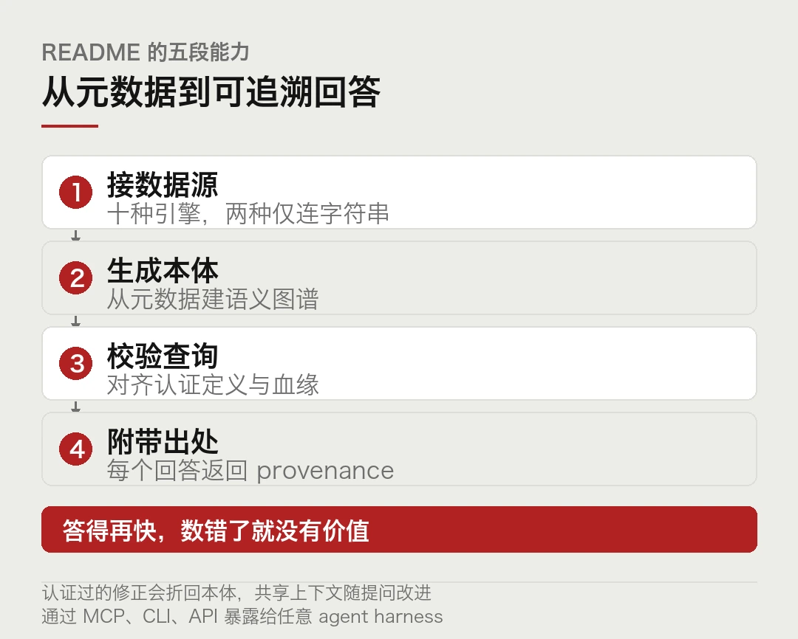
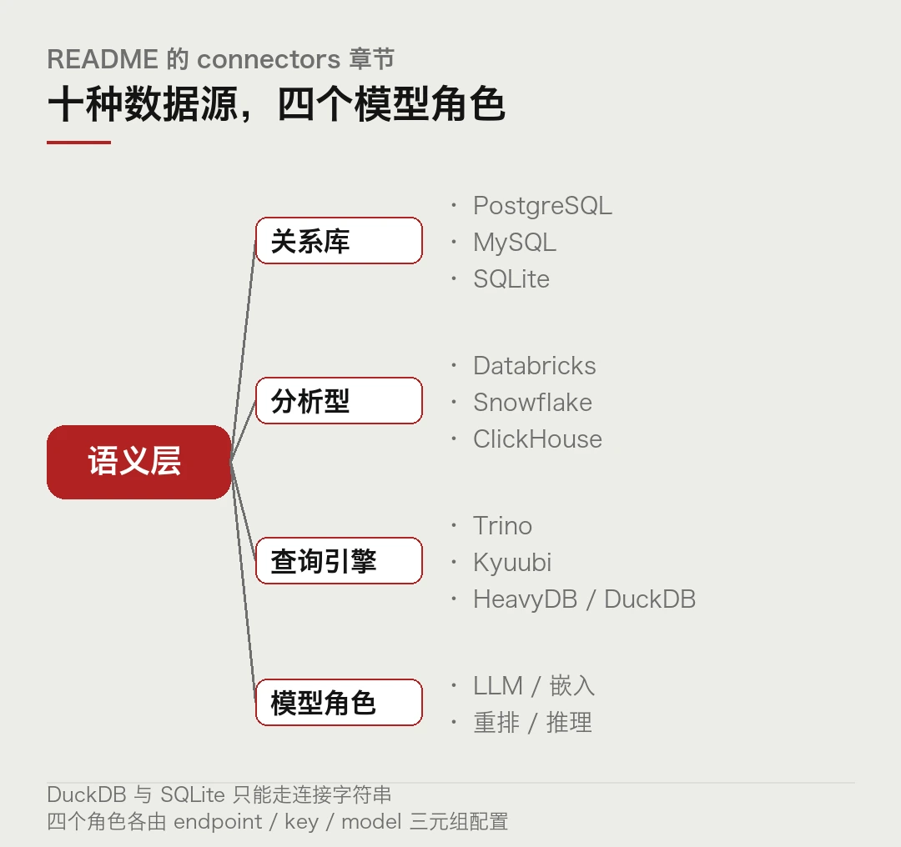
坑在哪，我读出来的几处
第一处最刺眼，得打个问号。README 明写「本项目目前不接受外部贡献」，团队自己维护代码，欢迎的是 integration request 和 bug issue，不是 PR。
这跟「开源」两个字给人的默认期待不一样。代码在 Apache-2.0 下可以随便 fork、随便改，但改完回不到主干。想长期用的团队，得把维护成本算进预算。
第二处是数据出门。README 提醒，开启 Kumo 关系预测后，agent 会把连接的表上传给它，受 `KUMO_MAX_TABLES` 默认 20 张、`KUMO_MAX_ROWS_PER_TABLE` 限制，启用前要先过组织内部的数据审查。
一个要给企业做语义层的工具，自己就得先说清哪些数据会离开本地。它说了，这比闷头默认上传强。
第三处是各种「宁可报错也不糊弄」的设计。`KUMO_MAX_TABLES` 超预算时拒绝，而非截断只取前 20 张表。读表失败会点名哪张表，不再基于部分数据作答。生成的 PQL 日志去掉字面量，问题本身不入日志，仓库数据不进 prompt。
第四处比较碎。查询超时从 600 秒收到 60 秒。Python 3.13 环境在 cp313 wheel 到位前会直接报错。REST 的 `/api/chat/completions` 返回 SSE 流，别对它调 `.json()`。配套三个 skill，分别管安装、建模认证和提问验数。
这些细节比功能清单更能说明成熟度，也说明它离「开箱即用」还有多远。
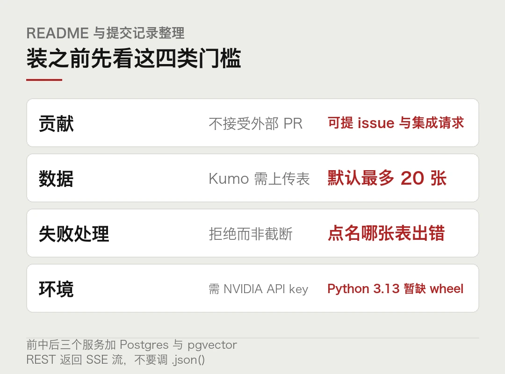
我准备怎么验
不测「能不能连上库」，那太容易演。测三件更硬的事。
第一，故意造两个口径冲突的营收字段，看它能不能在生成 SQL 前把冲突摆出来，而不是随手挑一个。
第二，问一个需要跨三张表的问题，看回答附带的 lineage 能不能回溯到具体列。查不到出处的答案，我一律不算通过。
第三，把表数顶到 21 张，看它是不是真的拒绝、并且报清是哪张表超了。文档写的「refuse rather than truncate」得能在真实环境里复现。
第三件最要紧。一个悄悄少读几张表还照常给数的分析 agent，比直接报错危险得多。
示例库先起起来，三条验收一条条过。要是第三条挡不住，这套语义层我暂时不敢接生产数据。
本文信息来源
- GitHub — NVIDIA/auto-ontology repository（2026-11-06，仓库） · github.com
- GitHub API — NVIDIA/auto-ontology README, retrieved 2026-11-06（2026-11-06，仓库） · api.github.com
- GitHub Trending Today — Repositories Gaining the Most Stars, 2026-11-06（2026-11-06） · ghtrends.dev
- AI on Radar — Today's AI builder radar, November 6（2026-11-06） · aionradar.com
- Smartotics — AI Daily Report 2026-11-06（2026-11-06） · smartotics.com
- The Agent Times — Cosmicstack Labs Open-Sources Mercury Agent With Permission-Hardened Tools（2026-11-06） · theagenttimes.com
- 腾讯研究院 — AI速递 20261106（2026-11-06） · sohu.com
- GitHub Trending Weekly — star totals read Nov 6, 2026（2026-11-06） · githubtrending.today
- NVIDIA — Auto Ontology architecture and software components（2026-11-05，官方文档） · github.com
03国产汽车芯片上半年装车 3880 万颗，两年完成量产
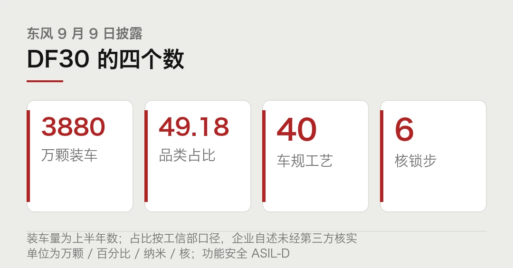
一颗拇指指甲盖大小的芯片，今年上半年装车 3880 万颗。
它叫 DF30，东风与中国信科联合开发。9 月 9 日武汉的一场产业大会上，东风集团副总经理尤峥披露了这个数。按工信部统计口径，它占到该品类 49.18%。从 2024 年 11 月发布到规模装车，中间不到两年。
车规芯片从流片到量产出货通常要三到五年。两年跑完，凭什么？答案不在某一项参数上，在整条链提前对齐了。
先看这颗芯片本身
据东风官方披露与公开报道，DF30 是国内首款全流程国产闭环的高性能车规级 MCU。它基于自主开源 RISC-V 多核架构，六核锁步、主频最高 350 MHz。工艺是国产 40 nm 车规工艺。功能安全到 ISO 26262 ASIL-D，可靠性过 AEC-Q100 Grade 1。
它适配国产 AutoSAR 操作系统，用在动力控制、车身底盘、电子信息与驾驶辅助。首搭的是发动机 ECU，这是车里安全要求最高、逻辑最复杂的位置之一。
已验证的车型有三款，东风奕派 007、猛士 M817、风神皓瀚。公开资料还提到漠河零下 43℃ 冬季标定、吐鲁番高温夏季标定，以及发布前累计 295 项测试。
选发动机 ECU 当第一站，比选个车窗控制器更能说明他们想验证什么。
交付链才是真门槛
单看参数，40 nm 并不起眼。这颗芯片的难处在于，它得在一辆真车上连续工作十几年，还要过整车厂那一整套认证。
注意一个细节。东风研发总院主任工程师雷鹏在智能汽车芯片生态大会上提到，为 DF30 提供 CPU 内核的芯来科技，团队从二十来人扩到约五百人。芯片前后做了六百多项测试。同一场会议上也有人提到，一颗车规芯片完整走完功能安全认证通常要三到五年。
这组数字比制程更能解释「两年」的含金量。测试一项没省，设计、验证、整车标定被压在同一条时间线上并行跑。
距离也帮了忙。光谷做芯片，车谷造整车，车程不到一小时。工程师带着板子过去，半天就能在台架上看到反馈。
据长江网报道，武汉经开区正在形成芯片、整车、软件协同的供应链。东软睿驰的 L2+ 端到端智驾域控样车在路测，研发人员占比 84.5%；中国电子云可信智算中心投用首年 100P 算力使用率突破 90%；座舱芯片「龍鹰一号」累计出货破百万颗，7 纳米「天工 100」AI 加速芯片今年 8 月全面量产。
以前是先有芯片再找车，现在是先有车再定义芯片。顺序一换，迭代周期就跟着变。
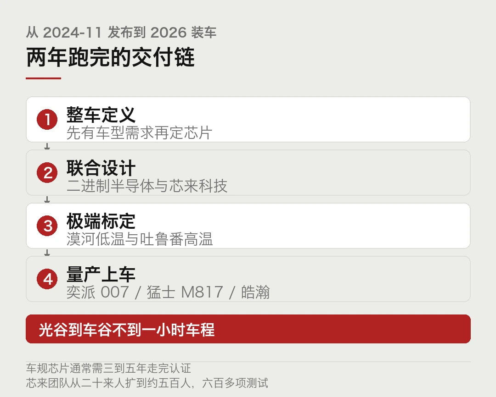
另一条线也在同期推进
11 月 10 日，通用 GPU 企业登临科技将在港交所挂牌。上市本身没什么可写的，招股文件里那几组数才有信息量。
按弗若斯特沙利文口径，公司 2025 年在中国企业 AI GPGPU 市场排第三，份额约 1.0%。同一份材料给了另一组数，该市场总规模约 118 亿元，头部海外厂商占 83.1%。
产品侧，自研 GPU+ 架构把 GPGPU 核心、AI 加速单元与高带宽片上内存集成在单颗芯片内，配套软件栈兼容 CUDA 生态。采用 Fabless 模式，Goldwasser 系列面向企业数据中心，KS 系列做边缘推理。
财务侧公开信息显示，2026 年前四个月营收约 2.00 亿元，已超过 2025 年全年，毛利率 50.9%，经调整净利润约 2058 万元。但另有两条得一起看，83% 收入来自企业私有云，前五大客户占 90.4%。
营收曲线好看，客户集中度这条也得摆在同一张表里，只报一头就是宣传册。
我不写募资额和估值，那不是产业进展。产品路线图倒有两条能核对的时间点。公司计划 2026 年 12 月推出 Minsky IV 第一期，继续用基于 LPDDR 的片上内存。2027 年下半年第二期集成 HBM3e 或其他先进内存，面向公有云与智算中心。
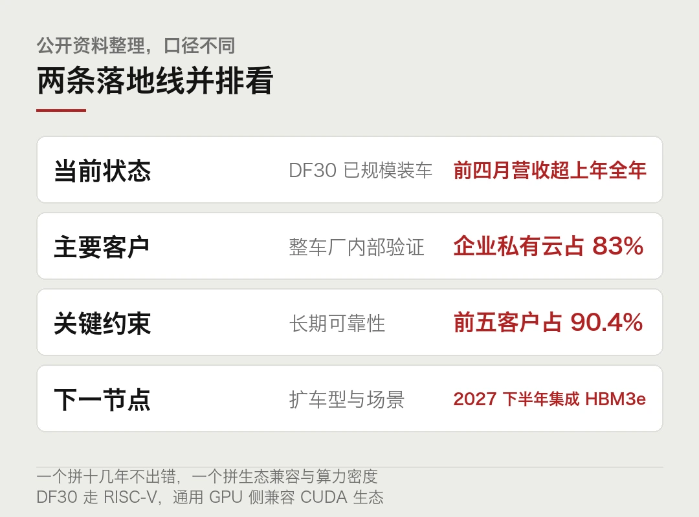
| 维度 | DF30 车规 MCU | 登临通用 GPU || --- | --- | --- || 落地标志 | 上半年装车 3880 万颗 | 前四月营收超上年全年 || 主要客户 | 整车厂内部验证上车 | 企业私有云为主 || 关键约束 | 功能安全与长周期可靠性 | 客户集中度 90.4% || 下一步 | 扩车型与场景 | 2027 年集成 HBM3e |
两条线看着都是「国产芯片」，拆开却是两种生意。一个拼的是十几年不出错，一个拼的是生态兼容与算力密度。回到采购现场，两套验收标准根本对不上。把它们塞进同一句「国产替代」里，反而什么都没说清。
该盯的是上车之后
装车 3880 万颗是个起点，不是终点。
车规芯片的考卷在交付之后才发下来。批量一致性能不能稳住？极端气候下的长期失效率是多少？供应链里有没有单点依赖，软件栈和工具链有没有人持续维护？
这几项得打个问号。目前都没有公开的长期口径，别急着把装车量当成可靠性证明。
GPU 那侧同理。兼容 CUDA 生态的说法需要真实 workload 支撑，HBM3e 集成是 2027 年下半年的计划，不是眼下的产品。客户集中度 90.4% 意味着前几家客户的采购节奏会直接放大到报表上。
还有一层更硬的约束。国产算力这一轮缺的，是能把芯片、板卡、驱动、编译器、框架到应用场景串起来的人。还得愿意陪客户改三年。再点亮一颗新芯片，解决不了这段。
交付链跑通一次不算本事，能反复跑才是。
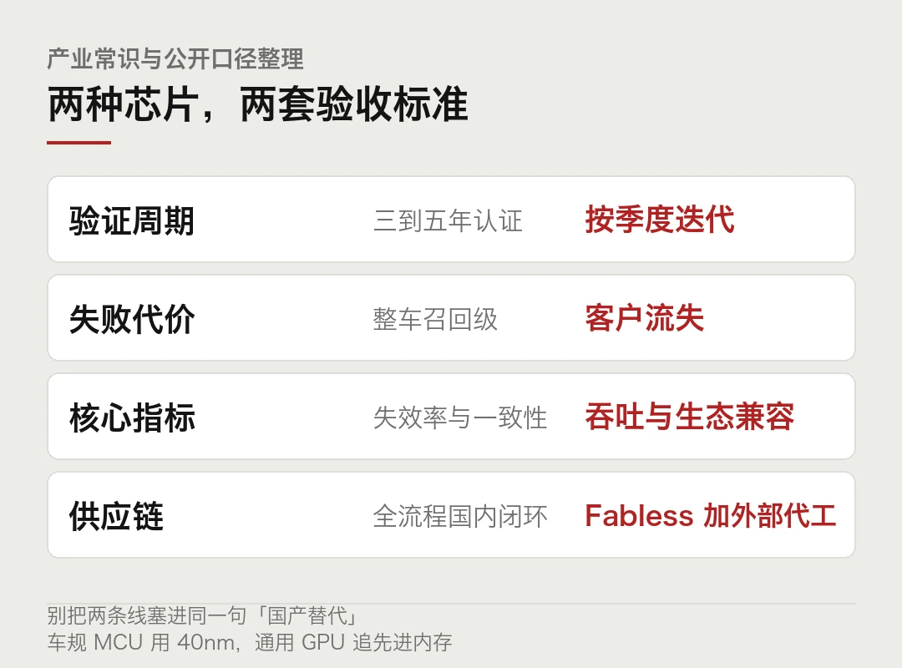
---
3880 万颗会被后面的季度刷新。换个车型、换家客户，那条两年跑完的链还跑不跑得动，目前没有公开答案。
本文信息来源
- 网易·支点财经 — 湖北造！指甲盖大小的汽车芯片半年装车3880万颗（2026-09-09） · c.m.163.com
- 东风汽车采购招投标平台 — 旗帜领航 东风转型破浪（2026-10-28，官方） · etp.dfmc.com.cn
- 凤凰网汽车 — 2026第六届智能汽车芯片生态大会召开，东风、长安、上汽及英飞凌等企业讨论RISC-V架构应用（2026-09-21） · auto.ifeng.com
- 长江网 — 车谷供应链正「柔软」更新（2026-11-06） · news.cjn.cn
- 苏州新闻网 — 登临科技招股，获元禾控股、通富微电等基石认购超6.4亿港元（2026-11-02） · sip.subaonet.com
- 同花顺财经 — 10月26日-11月1日港股IPO，7家招股5家聆讯（2026-11-02） · news.10jqka.com.cn
- 腾讯新闻 — 一图解码：登临科技上市在即，为国产GPGPU企业AI算力提供商（2026-11-05） · news.qq.com
- Hengsen Technology — DF30 Goes Into Volume Production: What China's First Mass-Producible Automotive-Grade MCU Means for Sourcing Strategy（2026-09-10） · hengsen.com
- 上海证券报 — 实验室里的技术第一如何变成产线上的常态（2026-11-06） · paper.cnstock.com
- 新华财经 — 直击进博：德勤发布中国具身智能产业出海报告（2026-11-06） · cnfin.com
04科技速览 15 条，逐条标注信源与口径
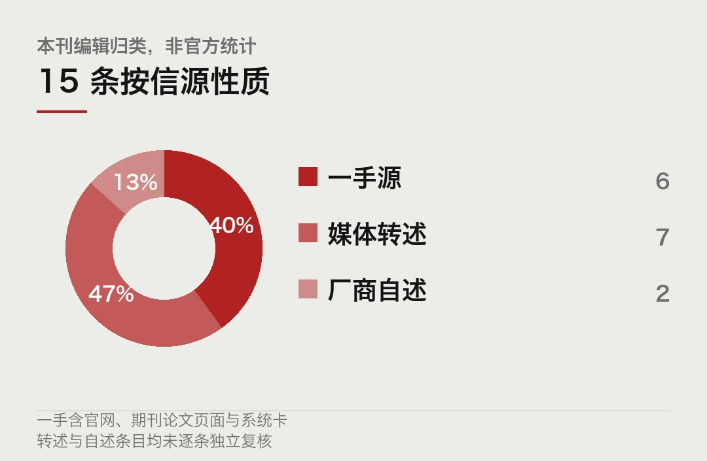
今天这份换个读法。
〔一手〕是官网、论文、系统卡这类能直接回查的原始信源。〔转述〕是媒体或厂商自述的二手口径。两类交错着排，不按主题分组。
为什么这么排？今天一半的料是「某公司说自己做到了」，另一半是论文原文。混着读，容易把自测当成定论。这里有个坑，厂商自测数字往往漂亮却没给对照组。先看清出处，再决定信几分。
〔一手〕海外 · OpenAI 给安全模型自评了关键级
GPT-6 Cyber 系统卡 11 月 5 日发布。它把模型的网络安全能力等级定为 Critical，与 GPT-6 Astra 同级。
ExploitGym 得分 48.5%，上一代 GPT-5.6 Cyber 是 32.1%。OpenAI 称研究人员借它在 Firefox 里发现 81 个此前未知的高危漏洞，Mozilla 已开始修。
口径得标清。这些数字全是 OpenAI 自评，独立复现尚未出现。模型目前仅向审核过的 Daybreak Red 客户开放。
〔转述〕国内 · 百度开源 ERNIE 5.5 Flash Base 权重
据腾讯研究院 AI 速递，预训练终点权重已开放。稀疏 MoE 架构，总参数 280B，每 token 激活 14B。
33.5T tokens 从零预训练。训练上下文 128K，推理支持 1M。43 层里 37 层用压缩注意力，每 128 个 token 只缓存一条。512 个路由专家，每 token 选 10 个。
FP8 与 BF16 两版已上 Hugging Face。厂商自述口径。
〔一手〕国内 · 清华一克脑相机登上《自然》
清华官网披露，Airscope 是首个突破百万像素的无线介观显微镜。重 1 克不含电池，6 毫米视场内以单细胞分辨率记录小鼠皮层活动。
单只小鼠可同时记录 8500 多个神经元，是现有无线头戴式的 25 倍。同部位长期记录可超 200 天。凑近看这四个数，轻、广、多、久，正好对上过去十几年头戴显微镜的四道墙。
论文 10 月 19 日在线发表，11 月初中文报道集中。团队还用它做了钻管测试，两只小鼠接触之前，就能从神经活动区分优势与从属个体。
〔一手〕海外 · M6 MacBook Pro 国行开卖
Apple 中国官网显示，11 月 6 日发售。14 英寸 M6 款 15,999 元起，12 核 CPU 加 12 核 GPU、双 16 核神经网络引擎。配 24GB 统一内存与 1TB 存储，Wi-Fi 7，可选纳米纹理显示屏。
另有 16 英寸与 M5 Pro / M5 Max 配置。
触屏版 tandem OLED 与 Dynamic Island 的参数来自 MacObserver，国行页面未确认。本条不采信，别只看海外稿就当国行也有。
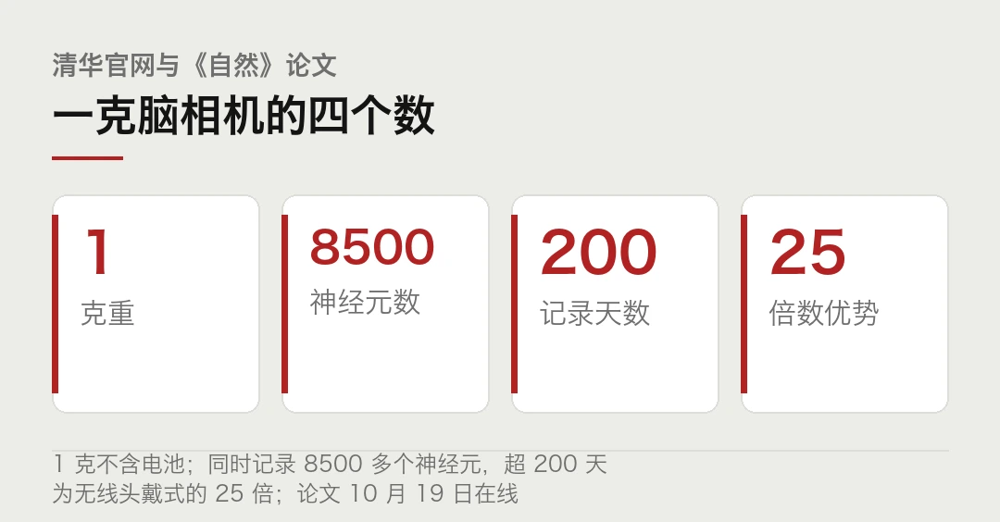
〔一手〕国内 · 西安交大刷新对气候突变的认知
西安交大官网 11 月 6 日消息。团队以第一单位在《科学》发表研究，标题是《冰期海洋环流突变的速度比冰芯记录指示的更慢》。
针对末次冰期 DO 事件，论文指出一处方法论问题。此前「AMOC 突然增强可在数十年内完成」的结论基于冰芯氧同位素推断，而该信号同时受温度与水汽源影响。
属古气候机制研究，不是对当代环流的预测。
〔转述〕国内 · 蚂蚁发布 Ling 3.2 Flash
据 IT 之家，百灵团队推出原生多模态模型。560B 总参数、25B 激活、1M 上下文。
原生支持图像、文本与视频输入，主攻复杂视觉理解、多模态长程 agent、3D 理解与医疗多模态。
发布评估里 OmniDocBench 1.5 得 92.21，Vision2Web 得 85.86。对照 Opus 5 的 90.56 与 80.20。这些是厂商自测对比，前两周限时免费。
〔一手〕海外 · 免增菌也能查沙门氏菌
《科学报告》11 月 6 日刊出一项数字 PCR 方法。用 invA 与 pagC 双靶标，直接从牛粪样本检出沙门氏菌 DNA，省掉前增菌步骤。
无增菌时 invA 检出率 46.7%，pagC 为 28.3%。串联判定的 Gwet's AC1 与培养法一致性 82.5%。
属检测方法学研究，样本量有限。未涉及临床或食品安全处置结论。
〔转述〕国内 · 浙大把癌细胞的读码错误做成开关
据澎湃新闻转述《自然》论文，浙大良渚实验室毛圆辉团队有个巧妙发现。特定密码子组合会在多种癌细胞中诱发更频繁的核糖体 −1 移码，正常细胞中相对少见。
团队据此设计 FAST 合成回路。让移码发生时才表达焦亡效应蛋白 GSDMD，在细胞膜上打孔。
小鼠肿瘤模型显示抗肿瘤效果，联合免疫检查点抑制剂可增强。动物实验阶段，不是临床疗法。
〔一手〕海外 · 三星公布 HBM4 量产参数
三星全球新闻室确认，HBM4 已量产并向客户出货。
采用第六代 10 纳米级 1c DRAM 与 4nm 逻辑基底。标称 11.7 Gbps，单堆栈带宽最高 3.3 TB/s。12 层堆叠提供 24GB 到 36GB 容量，官方称能效较 HBM3E 提升 40%。
全部为厂商自报参数，未见第三方实测。公司预计 2026 年 HBM 销售额超过 2025 年三倍。
〔转述〕国内 · 人形机器人全年产量或破十万台
据腾讯网报道的虹桥论坛分论坛消息，工信部副部长熊继军给了一组数。今年上半年我国人形机器人整机产量超 4 万台，全年有望突破 10 万台。
他还提到，整机产品正从「能跑会跳」向「能想会干」升级。论坛同期发布《人形机器人应用场景图谱（2026）》。
属官方口径经媒体转述。未见分企业明细，也没给统计范围说明。
〔转述〕国内 · 德勤发布具身智能出海报告
据新华财经与第一财经，德勤中国在进博会首发报告。称 2025 年全球具身智能市场规模突破 210 亿美元，2030 年预计超千亿美元。
2025 年中国工业机器人出口额 16.7 亿美元，首次实现贸易顺差。2026 年上半年进一步达 10.1 亿美元。
报告判断，人形与四足品类仍处海外早期验证阶段。机构预测经媒体转述，原报告未逐页核对。
〔转述〕海外 · 谷歌视频模型支持 15 秒原生生成
据 IT 之家转述，Gemini Omni 1.2 Flash 在 Gemini API 与企业版开放。原生片段从 1.1 版的 10 秒延长到 15 秒，支持按秒自定义与多轮对话式编辑。
较 1.1 版降价 30%，720p 每秒 0.07 美元。工作流可先用低分辨率起草，最后升到 1080p 或 4K。
价格与能力均为厂商公布口径。
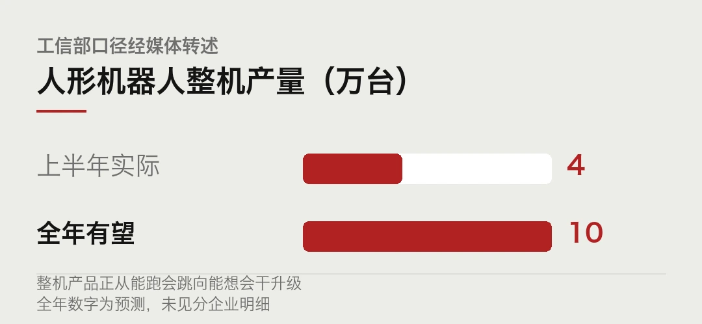
〔转述〕国内 · 《科学》揭示肝转移的免疫抑制新机制
据 BioArt 转述，中科院上海营养与健康研究所团队 11 月 6 日在《科学》发表研究。
他们在肝转移灶中鉴定出一群「肝转移相关造血干细胞」LM-HSCs。通过招募、重编程、偏向分化与旁分泌抑制四步，在成体肝脏局部重建免疫抑制屏障。
团队称该胚胎造血程序在原发性肝癌及非恶性慢性肝病中未以相同程度触发。机制研究，非临床结论。
〔转述〕海外 · Claude 上线个人财务只读功能
据每日经济新闻，Anthropic 为美国 Pro、Max 与 Ultra 订阅用户开放测试。通过 Plaid 连接银行与信用卡账户。
可用自然语言查余额、交易记录、消费分类与未来账单，还能识别重复扣款。设计为只读，不能转账或执行投资操作。
专区对话不用于训练，可随时解除连接。功能范围与权限均为厂商自述。
〔转述〕国内 · 优必选海外交付明年有望上量
据深圳新闻网，公司重点瞄准东南亚与欧洲，代理商逐步签约。
报道引述弗若斯特沙利文数据称，2026 年上半年全球人形机器人收入前五均来自中国，合计占五成以上，优必选以 16.5% 居首。上半年营收 12.7 亿元、同比增 104.2%。研发团队 1103 人，全年研发投入预计 7 亿元。
份额与财务数据分属第三方统计与公司披露，口径不同，不宜并列比较。
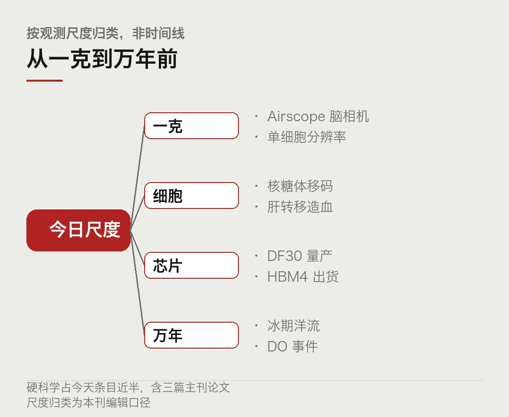
财务、定价、市场预测与医学研究相关条目仅作事实转述，不构成投资或医疗建议。
检索中另有特定厂商生态、代工报价、选举与监管审查相关素材，按本刊红线主动排除，未进入本期。
---
本文信息来源
- OpenAI Deployment Safety Hub — GPT-6 Cyber System Card（2026-11-05，官方） · deploymentsafety.openai.com
- OpenAI — GPT-6 Cyber: Advancing the frontier of aligned cybersecurity agents（2026-11-05，官方） · openai.com
- AI Affairs — OpenAI launches GPT-6 Cyber with a Critical cybersecurity rating（2026-11-05） · aiaffairs.com
- 清华大学 — 1克「脑相机」，拍下大脑里的「社会」（2026-11-02，官方） · tsinghua.edu.cn
- 西安交通大学新闻网 — Science发文！程海教授团队刷新对气候突变的认知（2026-11-06，官方） · news.xjtu.edu.cn
- Scientific Reports — Culture-independent detection of Salmonella enterica in cattle feces via digital PCR（2026-11-06，论文） · nature.com
- Apple 中国 — 14 英寸 MacBook Pro（M6 芯片）购买页（2026-11-06，官方） · apple.com.cn
- Samsung Global Newsroom — HBM4 mass production and commercial shipments（2026-02-13，官方发布） · news.samsung.com
- The Mac Observer — Apple Launching 5 New Products on November 6（2026-11-05） · macobserver.com
- 腾讯研究院 — AI速递 20261106（2026-11-06） · sohu.com
- IT之家 — 百灵大模型 Ling 3.2 Flash 发布（2026-11-06） · ithome.com
- 澎湃新闻 — 《自然》：浙大团队利用癌细胞翻译移码现象合成促焦亡蛋白（2026-11-06） · m.thepaper.cn
- 网易·BioArt — Science丨肝转移灶造血干细胞诱导免疫抑制的新机制（2026-11-06） · 163.com
- 腾讯网 — 今年国内人形机器人产量或超10万台（2026-11-06） · new.qq.com
- 新华财经 — 直击进博：德勤发布中国具身智能产业出海报告（2026-11-06） · cnfin.com
- 网易·IT之家 — 谷歌 Gemini Omni 1.2 Flash 发布，原生 15 秒生成（2026-11-06） · 163.com
- 每日经济新闻 — 全球科技早参：Anthropic推出Claude个人财务功能（2026-11-06） · new.qq.com
- 深圳新闻网 — 机器人一线行：深圳机器人企业加速出海（2026-11-06） · sznews.com
本文首发于公众号「YITENG」。原文：daily.html
留言